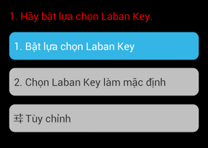
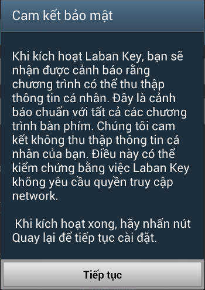
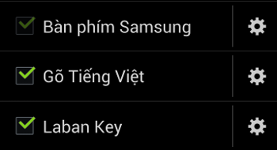
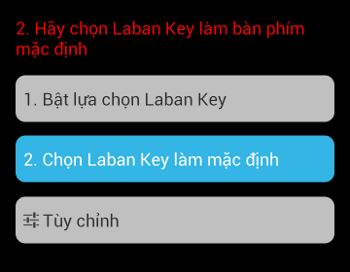
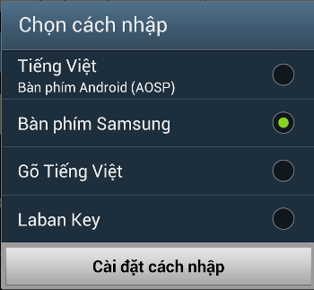
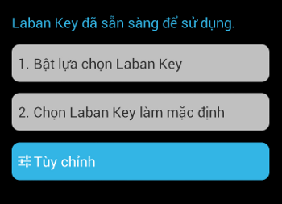
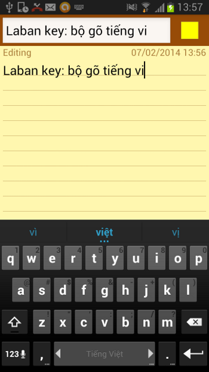

Trước khi có thể sử dụng bộ gõ các bạn cần thao tác một số bước đơn giản như sau:
Đây là màn hình ban đầu khi mở ứng dụng

1. Bật lựa chọn Laban Key
Bấm vào nút đầu tiên, hộp thoại cam kết bảo mật xuất hiện.

Bấm vào "Tiếp tục" để chuyển đến trang bật lựa chọn. Tại đây tick vào để kích hoạt Laban Key

Sau khi Laban Key đã được kích hoạt, các bạn vui lòng bấm phím BACK để về màn hình chính.

2. Chọn Laban Key làm bàn phím mặc định.
Các bạn tiếp tục bấm nút thứ 2 để chọn Laban Key làm bộ gõ mặc định.

Bây giờ Laban Key đã sẵn sàng được sử dụng.

Các bạn không cần bấm nút thứ 3 nếu không cần tùy chỉnh gì thêm.
